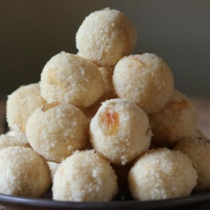

A pinch of baking soda (optional, for crispy boondi)
Oil or ghee for deep frying

Instructions:
Prepare the batter –
Mix besan with water to make a smooth, flowing batter (not too thick or thin). Add a pinch of baking soda for crispiness.
Fry the boondi –
Heat oil/ghee in a pan. Pour the batter through a perforated ladle (jhara) to form tiny droplets. Fry until golden but not too crispy. Drain excess oil
Make sugar syrup –
Boil sugar and water until it reaches 1-string consistency (when you pinch a drop between fingers, it forms a string). Add cardamom powder
Mix boondi & syrup –
Add fried boondi to the warm syrup, mix well, and let it absorb the syrup for 10-15 minutes.
Shape laddus –
Add ghee and chopped nuts, mix well, and shape into round laddus while the mixture is still warm. Let them set before serving.